Alpha Set — First Cards of the Amaranth Expanse
Summary
This file contains 18 named cards: 15 single-type cards (three each for Magic, Technology, Intelligence, Biology, and Materials) and 3 multi-type, multi-cost cards. Together they draw cost from all five Founts (the Mass, the Bloom, the Signal, the Circuit, the Tangle) and each of the five races carries at least one card tied to its own primary Fount strength: the Cindral Reach (Materials), the Mireth Bloom (Biology), the Panoptic Concord (Intelligence), the Starweave Communion (Magic), and the Wrought Assembly (Technology).
Magic — the Tangle
Unwritten Hour
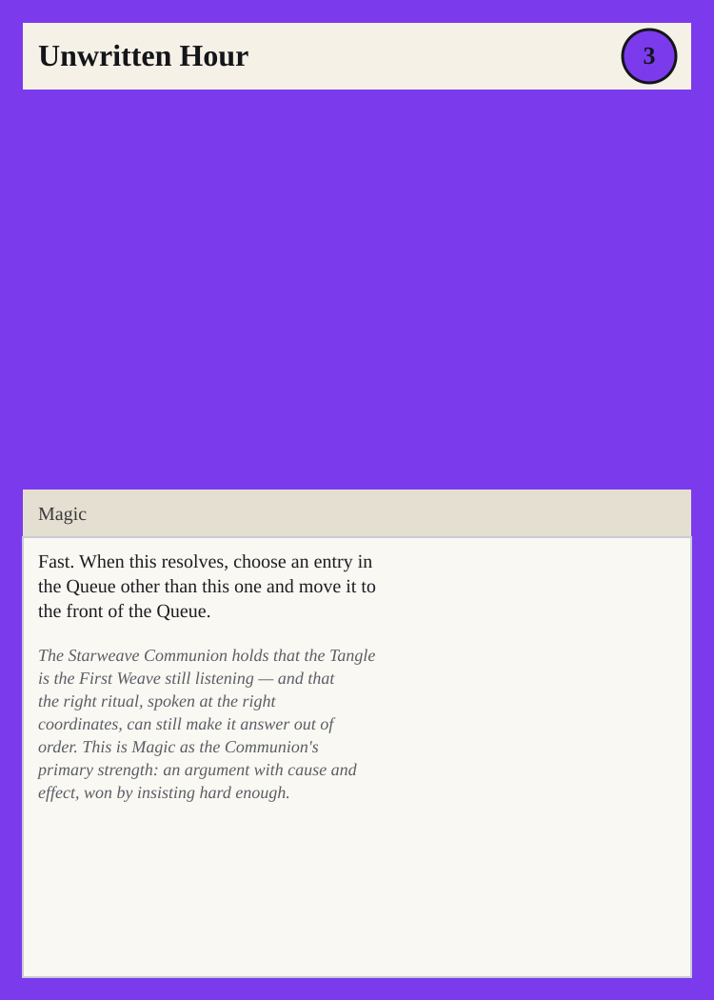
Cost line: 3 Tangle Type line: Magic Rules text: Fast. When this resolves, choose an entry in the Queue other than this one and move it to the front of the Queue.
The Starweave Communion holds that the Tangle is the First Weave still listening — and that the right ritual, spoken at the right coordinates, can still make it answer out of order. This is Magic as the Communion's primary strength: an argument with cause and effect, won by insisting hard enough.
Oathbreaker's Toll
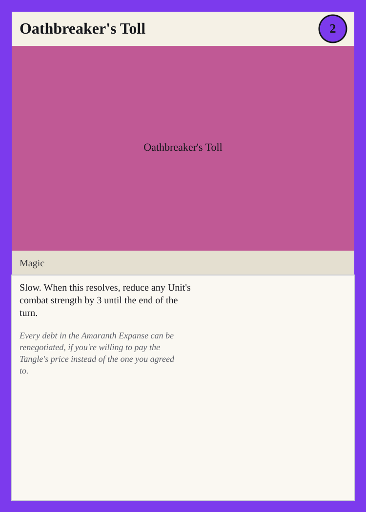
Cost line: 2 Tangle Type line: Magic Rules text: Slow. When this resolves, reduce any Unit's combat strength by 3 until the end of the turn.
Every debt in the Amaranth Expanse can be renegotiated, if you're willing to pay the Tangle's price instead of the one you agreed to.
Echo Recall
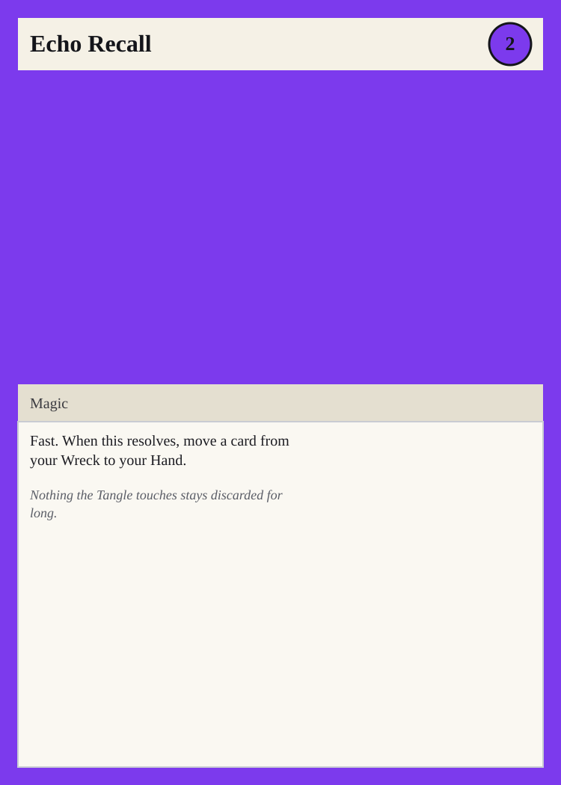
Cost line: 2 Tangle Type line: Magic Rules text: Fast. When this resolves, move a card from your Wreck to your Hand.
Nothing the Tangle touches stays discarded for long.
Technology — the Circuit
Replicant Foundry Core
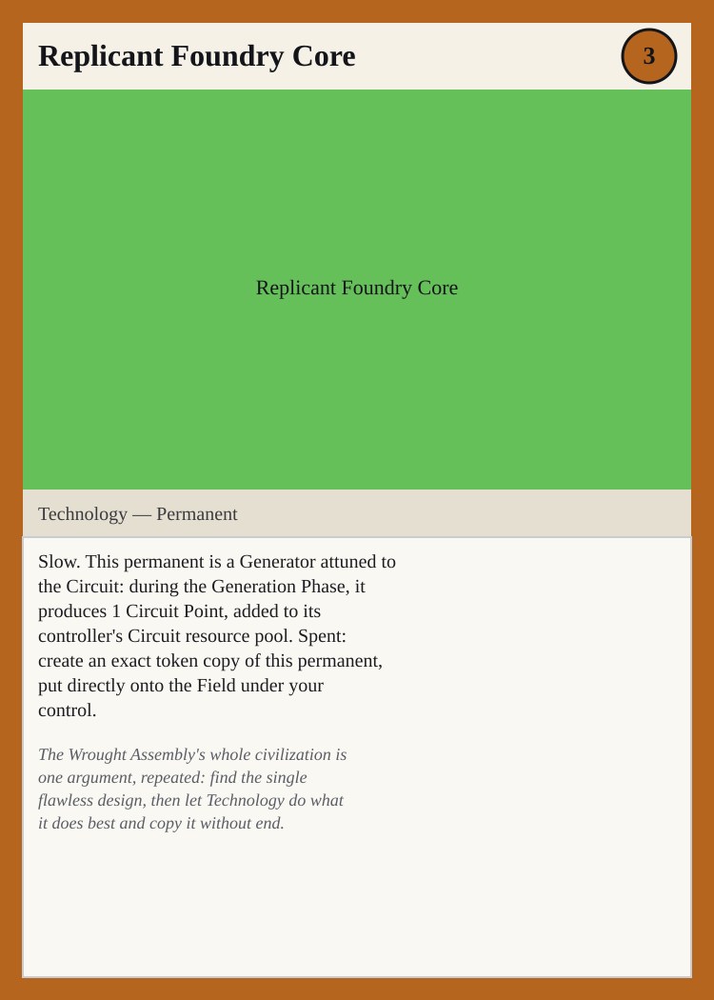
Cost line: 3 Circuit Type line: Technology — Permanent Rules text: Slow. This permanent is a Generator attuned to the Circuit: during the Generation Phase, it produces 1 Circuit Point, added to its controller's Circuit resource pool. Spent: create an exact token copy of this permanent, put directly onto the Field under your control.
The Wrought Assembly's whole civilization is one argument, repeated: find the single flawless design, then let Technology do what it does best and copy it without end.
Firmware Sentinel
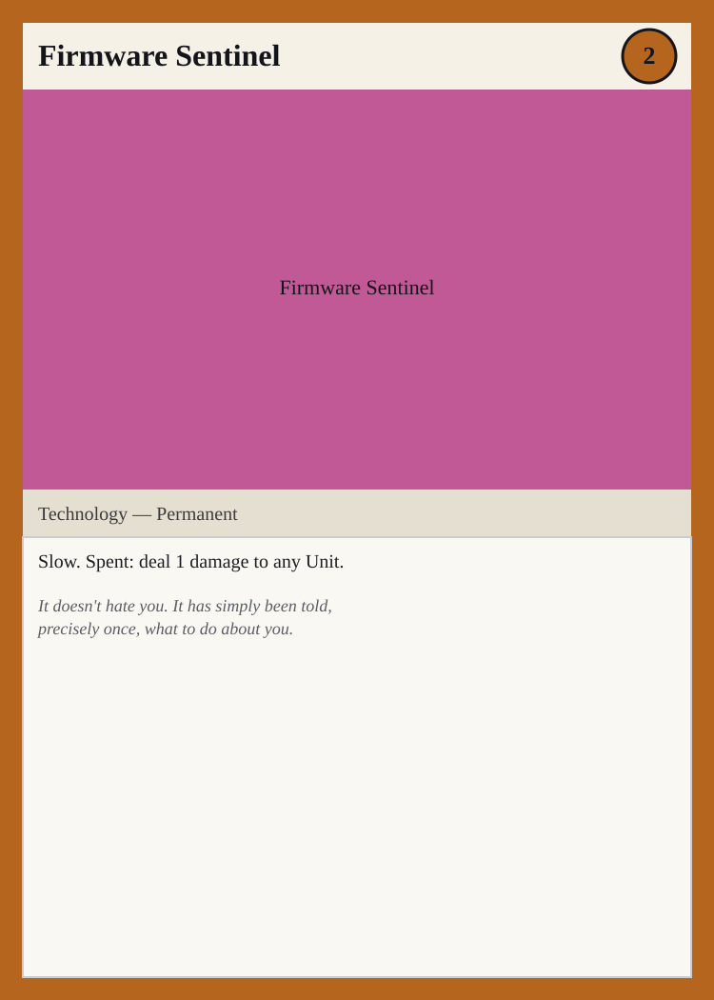
Cost line: 2 Circuit Type line: Technology — Permanent Rules text: Slow. Spent: deal 1 damage to any Unit.
It doesn't hate you. It has simply been told, precisely once, what to do about you.
Drone Cascade
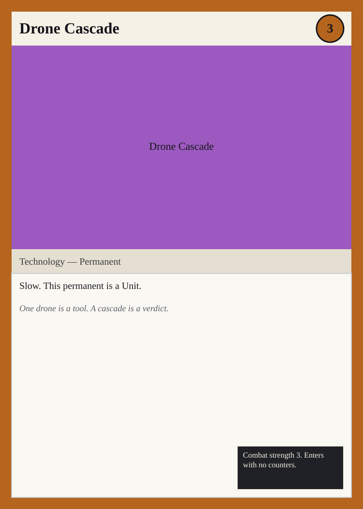
Cost line: 3 Circuit Type line: Technology — Permanent Rules text: Slow. This permanent is a Unit. Stats/counters line: Combat strength 3. Enters with no counters.
One drone is a tool. A cascade is a verdict.
Intelligence — the Signal
Foreknowledge Cipher
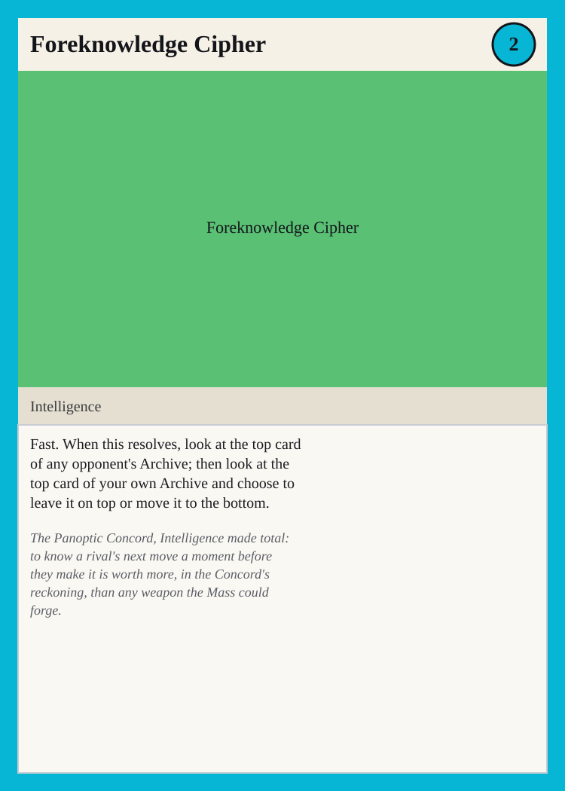
Cost line: 2 Signal Type line: Intelligence Rules text: Fast. When this resolves, look at the top card of any opponent's Archive; then look at the top card of your own Archive and choose to leave it on top or move it to the bottom.
The Panoptic Concord, Intelligence made total: to know a rival's next move a moment before they make it is worth more, in the Concord's reckoning, than any weapon the Mass could forge.
Whispered Contract
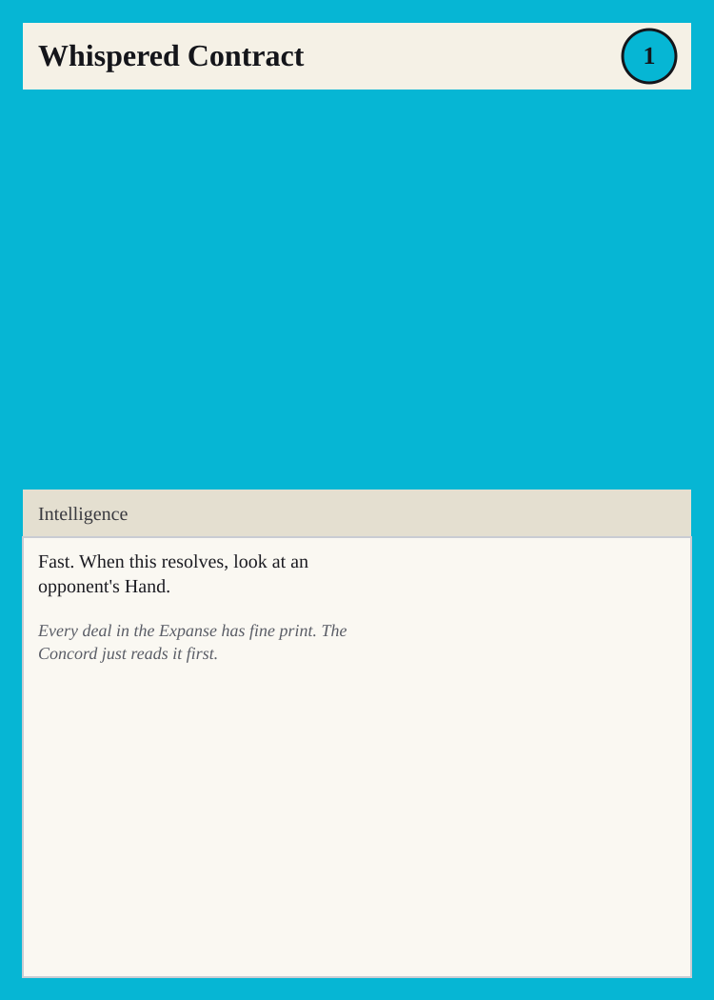
Cost line: 1 Signal Type line: Intelligence Rules text: Fast. When this resolves, look at an opponent's Hand.
Every deal in the Expanse has fine print. The Concord just reads it first.
Static Ambush
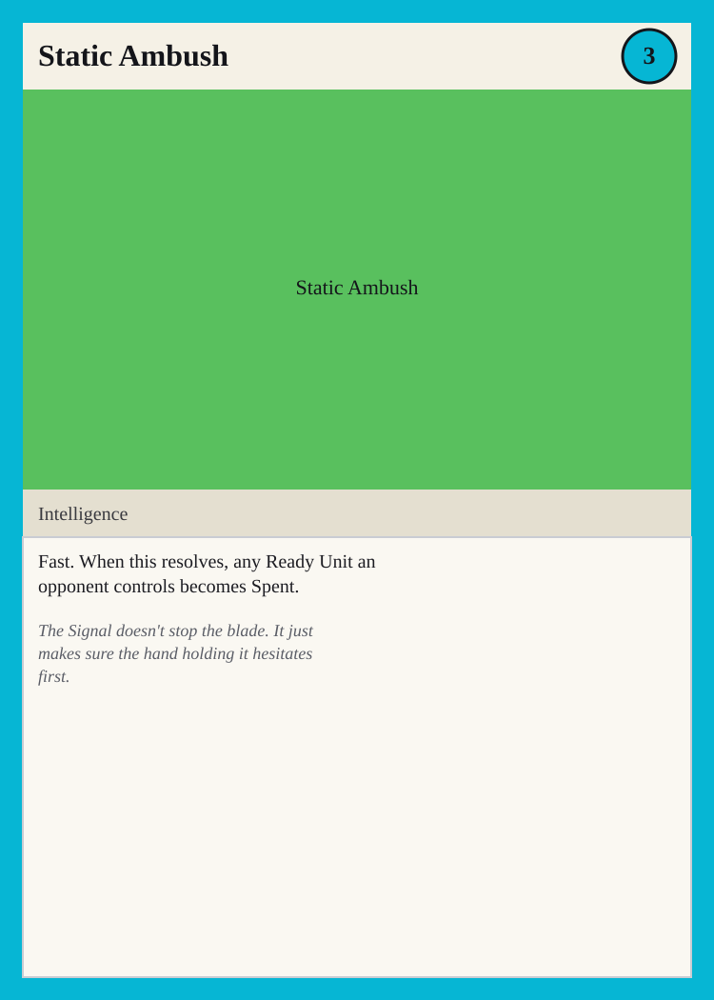
Cost line: 3 Signal Type line: Intelligence Rules text: Fast. When this resolves, any Ready Unit an opponent controls becomes Spent.
The Signal doesn't stop the blade. It just makes sure the hand holding it hesitates first.
Biology — the Bloom
Sporeknit Warden
Cost line: 3 Bloom Type line: Biology — Permanent Rules text: Slow. Stats/counters line: Combat strength 2. Enters with one Growth counter.
The Mireth Bloom, Biology at its purest: seed a battlefield, then come back later to harvest whatever it became. This is the Bloom's primary strength, worn as a body.
Feral Bloomcaller
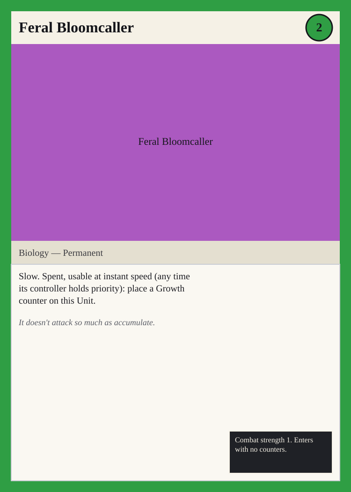
Cost line: 2 Bloom Type line: Biology — Permanent Rules text: Slow. Spent, usable at instant speed (any time its controller holds priority): place a Growth counter on this Unit. Stats/counters line: Combat strength 1. Enters with no counters.
It doesn't attack so much as accumulate.
Rootbind Thicket
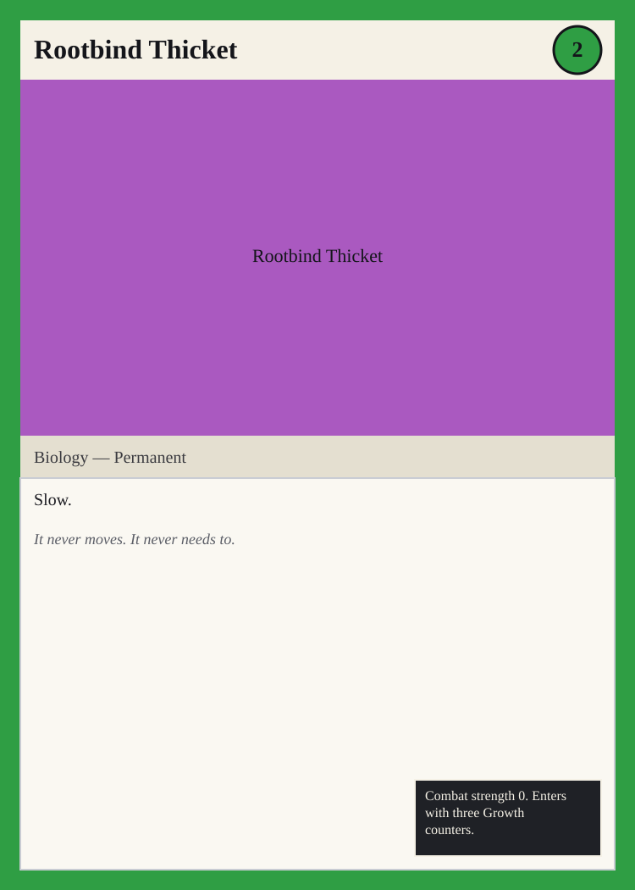
Cost line: 2 Bloom Type line: Biology — Permanent Rules text: Slow. Stats/counters line: Combat strength 0. Enters with three Growth counters.
It never moves. It never needs to.
Materials — the Mass
Salvage-Wrought Bastion
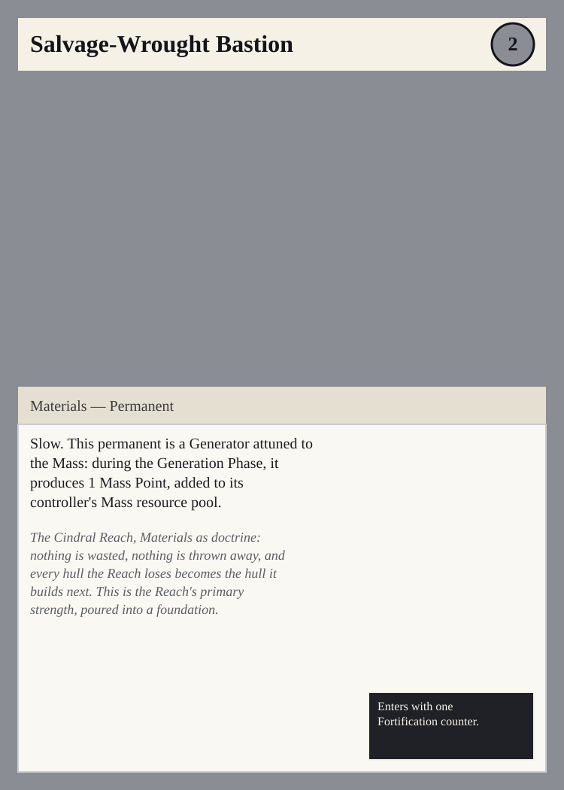
Cost line: 2 Mass Type line: Materials — Permanent Rules text: Slow. This permanent is a Generator attuned to the Mass: during the Generation Phase, it produces 1 Mass Point, added to its controller's Mass resource pool. Stats/counters line: Enters with one Fortification counter.
The Cindral Reach, Materials as doctrine: nothing is wasted, nothing is thrown away, and every hull the Reach loses becomes the hull it builds next. This is the Reach's primary strength, poured into a foundation.
Line-Fleet Trooper
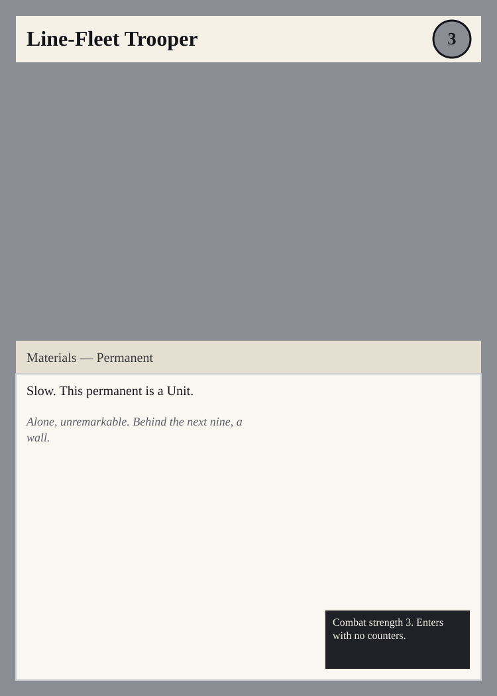
Cost line: 3 Mass Type line: Materials — Permanent Rules text: Slow. This permanent is a Unit. Stats/counters line: Combat strength 3. Enters with no counters.
Alone, unremarkable. Behind the next nine, a wall.
Cinder-Forged Plating
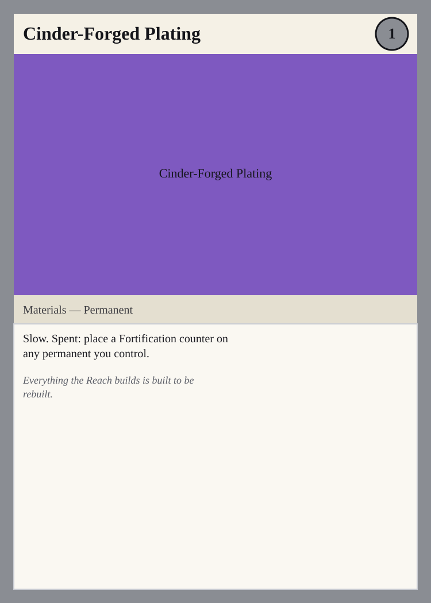
Cost line: 1 Mass Type line: Materials — Permanent Rules text: Slow. Spent: place a Fortification counter on any permanent you control.
Everything the Reach builds is built to be rebuilt.
Multiple Types and Multiple Costs
Wrought-Bloom Graft
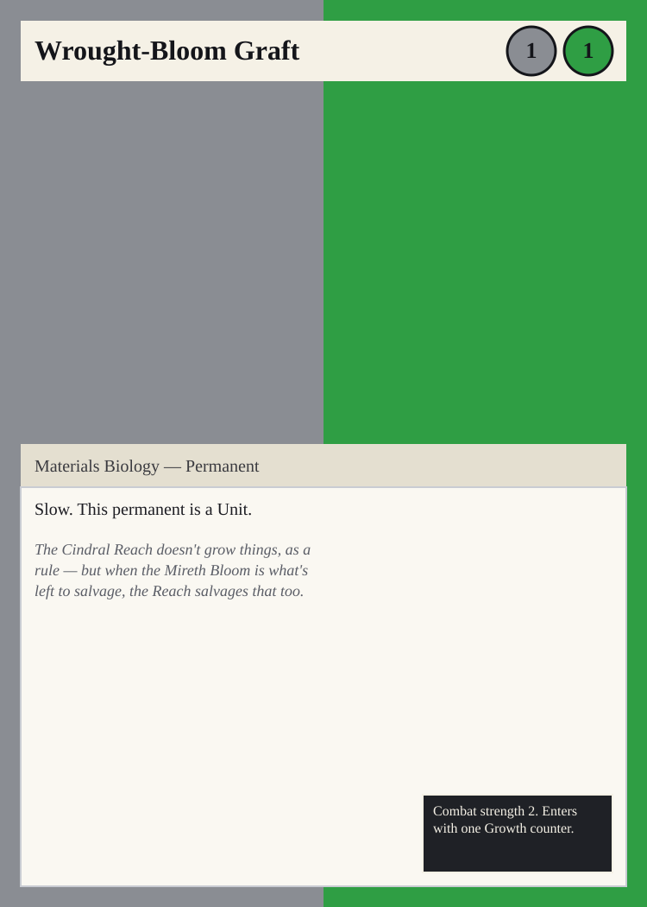
Cost line: 1 Mass, 1 Bloom Type line: Materials Biology — Permanent Rules text: Slow. This permanent is a Unit. Stats/counters line: Combat strength 2. Enters with one Growth counter.
The Cindral Reach doesn't grow things, as a rule — but when the Mireth Bloom is what's left to salvage, the Reach salvages that too.
Signal-Wrought Prototype
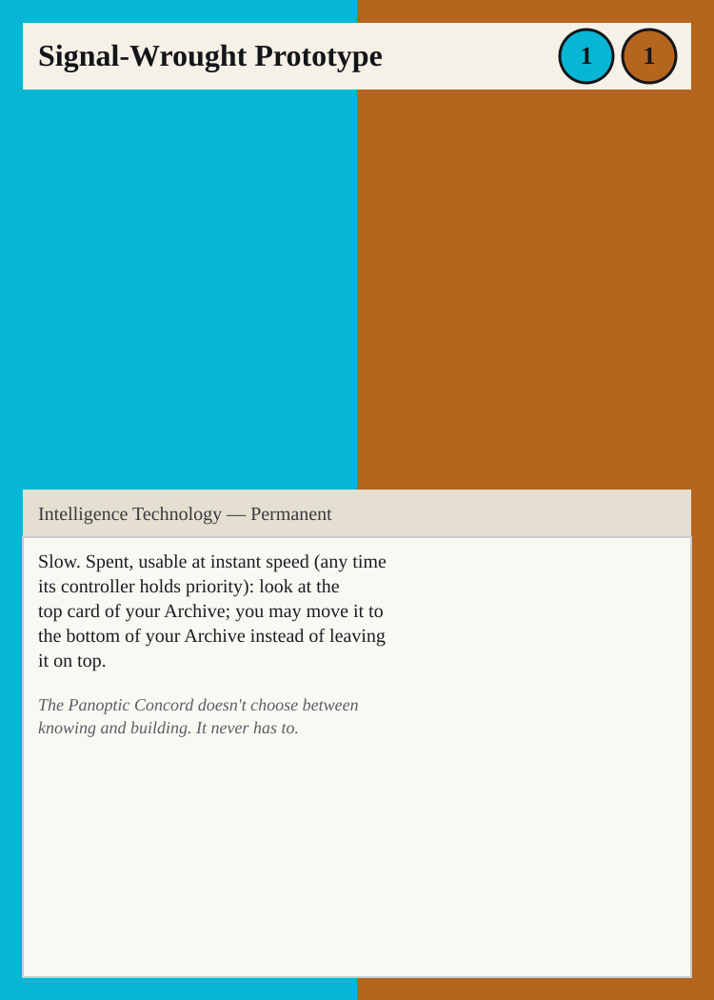
Cost line: 1 Signal, 1 Circuit Type line: Intelligence Technology — Permanent Rules text: Slow. Spent, usable at instant speed (any time its controller holds priority): look at the top card of your Archive; you may move it to the bottom of your Archive instead of leaving it on top.
The Panoptic Concord doesn't choose between knowing and building. It never has to.
Tangle-Forged Bolt
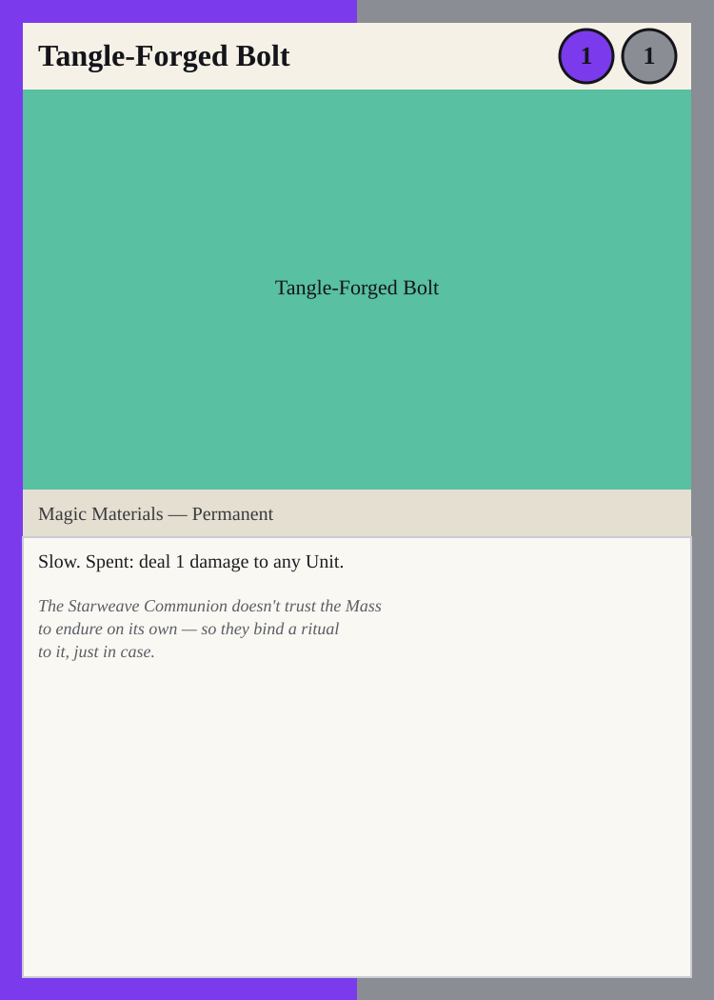
Cost line: 1 Tangle, 1 Mass Type line: Magic Materials — Permanent Rules text: Slow. Spent: deal 1 damage to any Unit.
The Starweave Communion doesn't trust the Mass to endure on its own — so they bind a ritual to it, just in case.